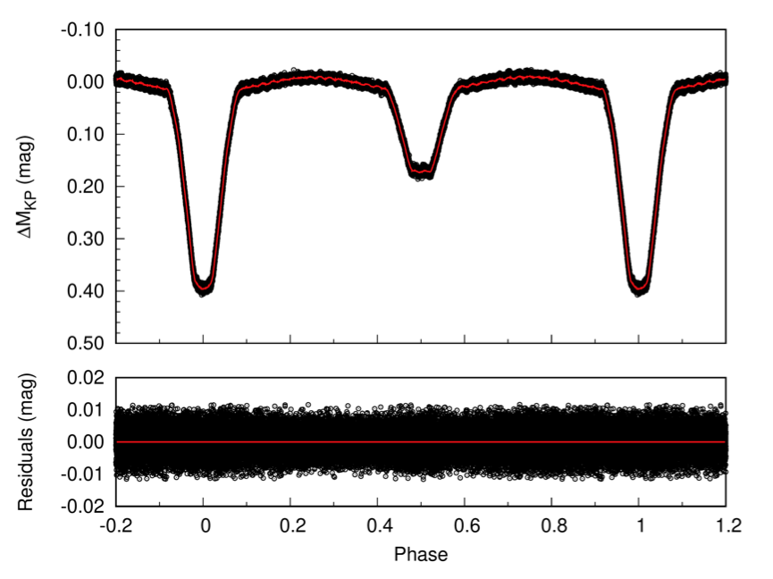
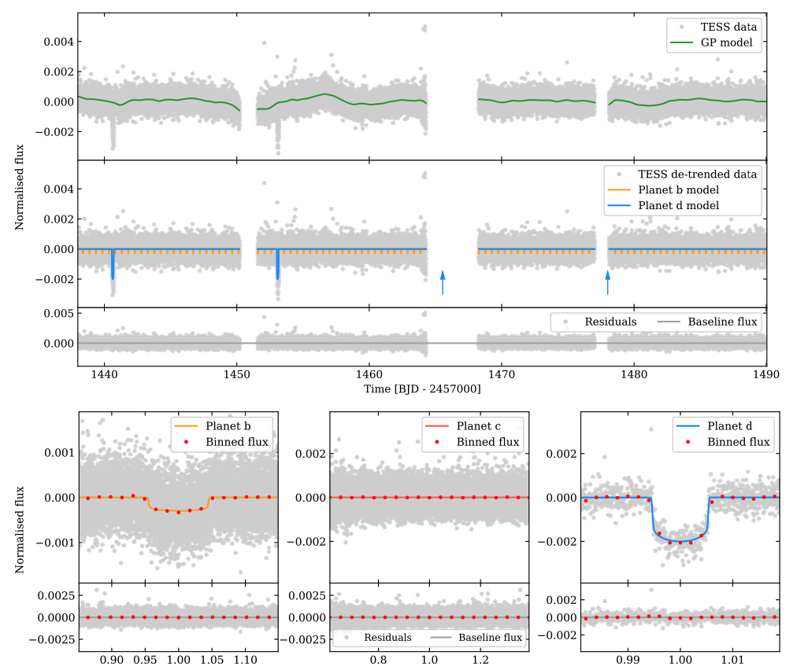
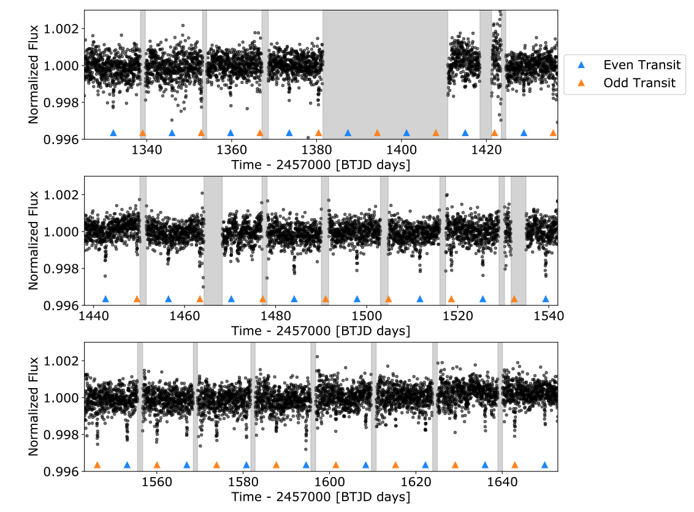

`STATUS UPDATE: Orbit 2 of Sector 40 is now available to download as a TICA product from MAST
Welcome TESS followers! This week we are looking at three papers from the archive,
OO Dra: an Algol-type binary formed through an extremely helium-poor mass accretion revealed by asteroseismology (Chen et. al., 2021) :
OO Dra is an eclipsing binary with an orbital period of 1.23838 days. Eclipsing binaries are important objects as they help us to understand stellar structure and evolution. Using TESS 2-minute cadenced data, the authors have analyzed the intrinsic oscillations of the primary component and identified seven confident and independent delta Scuti frequencies.
Single-star evolutionary models and mass-accreting models are computed to reproduce delta Scuti frequencies, with the fitting of residuals matching well.
Through asteroseismology the authors determine the stellar parameters of the primary as M = 1.92 M⊙, Z = 0.011, R = 2.068 R⊙, log g = 4.090, T = 8346 K, and L = 18.65 L⊙. These parameters match well with the dynamical parameters of the binary model.
The asteroseismology results also indicate that OO Dra is an Algol system which has undergone the rapid mass-transfer stage. The pulsator is likely a helium poor star with an age of 8.22 Myr, and that the primary is probably an un-evolved star formed by an extremely helium-poor mass accretion.
TOI-431/HIP 26013: a super-Earth and a sub-Neptune transiting a bright, early K dwarf, with a third RV planet (Osborn et al., 2021) :
In this paper the authors present the discovery of TOI-431, a bright, multi-planet system which has a stellar rotation period is 30.5 days. The system has been studied by the authors using radial velocity measurements and photometry.
Orbiting the host there are three planets, a super-Earth known as TOI-431b, a sub-Neptune known as TOI-431d, and TOI-431c which was not seen to transit the host. TOI-431b has a period of 0.49 days, a radius of 1.28 R⊕, a mass of 3.07 M⊕, and a density of 8.0 g cm-3. TOI-431d has a period of 12.46 days, a radius of 3.29 R⊕, a mass of 9.90 M⊕, and a density of 1.36 g cm-3. This planet is also likely to have an extended atmosphere. TOI-431c has an M sin i of 2.83 M⊕, and a period of 4.85 days.
All planets straddle the radius gap and present an interesting case-study for atmospheric evolution.
TESS Giants Transiting Giants I: A Non-inflated Hot Jupiter Orbiting a Massive Subgiant (Saunders et. al., 2021) :
The number of confirmed transiting exoplanets around evolved stars is still relatively low. This paper presents the discovery and characterization of a hot Jupiter orbiting a massive evolved sub-giant star, designated TOI-2184.
The host star has a mass of 1.53M⊙, a radius of 2.90 R⊙, and is located in the TESS southern continuous viewing zone. Due to periodic systematics which introduced spurious transit depth differences, this planet was originally flagged as a false positive by the TESS Quick-look Pipeline.
Using a new pipeline, which removes the scattered light from the TESS full frame images (FFIs), the authors combined the TESS photometry with that from the ground, in addition to radial velocity measurements. From this work a planet radius of 1.017 RJ and mass of 0.65 MJ were derived.
The mass and radius obtained are very close to that of Jupiter, and given the planets close proximity to its host star, this is unusual. The planet is in fact smaller than what is theoretically predicted based on the incident flux. See this paper for more information.

Fig. 1: Taken from Chen et., al., (2021).Light curve and O-C residuals of OO Dra. The upper panel presents the light curve (black circles), and the lower panel presents the O-C residuals. The red line in the upper panel denotes the synthesis mean curve..

Fig. 2: Taken from Osborn et., al., (2021). The TESS data for TOI-431 in Sectors 5 and 6. Top plot: detrending the TESS light curves and fitting models for TOI-431 b and c. Top: the full, 2-min cadence PDCSAP light curve, with no detrending for stellar activity, is shown in grey. Each sector has 2 segments of continuous viewing, and the gaps in the data correspond to the spacecraft down-linking the data to Earth after a TESS orbit of 13.7 days. Overlaid in green is the GP model that has been fit to this data (described in Section 3.2.1 of the paper), in order to detrend the stellar activity . Middle: the flux detrended with the GP model, with the transit models for TOI-431 b (orange) and d (blue) overlaid. The expected transit times for the 2 further transits of TOI-431 d, both of which fall in the data down-link, are marked with blue arrows. Bottom: residuals when the best fit model and GP have been subtracted from the PDCSAP flux. The baseline flux (normalized to 0) is shown in dark grey. Bottom plot: phase folds of the TESS data for TOI-431 b (left), c (middle, with no transit evident), and d (right), with the flux binned as red circles, and the residuals of the folds once the best fit models have been subtracted from the flux shown in the bottom panels.

Fig. 3: Taken from Saunders et., al., (2021).The full systematics-corrected flux light curve for TOI-2184b with transit times marked by triangles. The alternating triangle colors represent the even and odd transits. The gray sections mark the data gaps due to data downlinks or the spacecraft entering safe mode. While the even transits (blue) fall almost exclusively in the middle of continuous data collection, the odd transits (orange) fall primarily near the beginning or end of a data gap when the TESS detector is experiencing increased scatter due to thermal sensitivity variation and scattered light. This trend is most present in the first seven observing sectors (top two rows), and disappears for the final four sectors (bottom row).